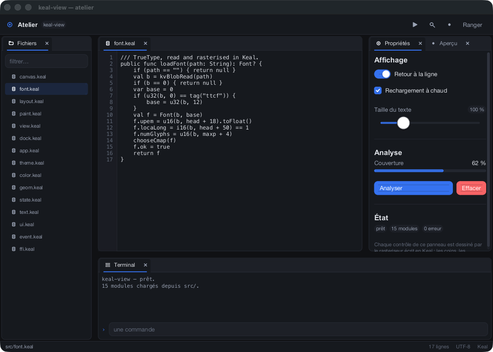

Not bindings to a toolkit, not a wrapper round a C canvas. The rasteriser, the TrueType engine, the layout, the widgets, the theme and the docking are .keal files. The C underneath opens a window, reports what the user did, and puts a finished buffer of pixels on the screen. It does not draw anything.
import "keal-view/keal-view.keal" val clicks = state(0) runApp("Hello", 320, 200, { -> column([ label("Clicked ${clicks.get()} times").fontSize(20.0).centered(), button("Click me", { -> clicks.set(clicks.get() + 1) }).kindOf(primary) ]).gaps(12.0).padAll(24.0).aligned(mainCenter, crossCenter).grows() })

Which of the two it is depends on the backend it was built against, and none of the other 11 to 13 % puts a pixel anywhere. The whole C surface is one header: a framebuffer, a byte blob, an event struct, and accessors for each.
One fact about the compiler decides the whole design. native """…""" pastes its C into the same translation unit as the compiled program, so a static inline function declared there is inlined into Keal's own code by the C compiler. A call across the boundary is not a call — it is the instruction it contains.
extern func kvPxSet(x: Int, y: Int, argb: Int): Int = "kv_set"
That line is one bounds-checked store. Measured at about half a nanosecond per pixel from a Keal loop, which is what a C rasteriser costs, because after inlining it is the C rasteriser. So there was no reason to write the drawing in C, and every reason not to.
Labels, buttons, checkboxes, radios, toggles, segmented controls, selects, sliders, steppers, progress, fields, tabs, cards, panels, scrolls — and custom, handed a clipped canvas, its rectangle, the fonts, the theme and its own hover state.
openMenu, openDialog, openSheet and .tip("…"). Nothing has to be installed: the run loop composes that layer above the application's own overlay.
One axis of flexbox and no more. There is no shrinking — content that does not fit is clipped rather than squeezed, because a layout that silently compresses fails only on small windows, which is the last place anyone looks.
A TrueType parser and rasteriser in Keal: cmap formats 0, 4, 6 and 12, glyf including composite glyphs, collections. Glyphs are filled by the signed-area method and rasterised at the size they will actually be drawn.
Anti-aliasing is analytic, not sampled: a straight edge's coverage is its exact overlap with the pixel cell. There is no quality dial and no frame that is quietly cheaper than the last.
Dark and light, built from one surface ramp, one accent and three status hues rather than a list of hex codes. useTheme(lightTheme()) is the whole change, including for widgets written afterwards.
The rasteriser is the only thing that knows what a pixel is. One layout is correct on a Retina display and a projector; the numbers never change, the scale does.
Between frames the loop is inside kvWait, which blocks until the system has something to say. Not a low duty cycle — none. On a laptop that is worth more than drawing speed.
The arrangement is a binary tree of exactly two cases — a leaf holding tabs, and a split holding two children with a fraction — which is few enough that every arrangement it can be in is one you can reason about.
A panel is dragged by its tab; while it is moving, the highlight under the pointer says where letting go would put it — left, right, above, below, or as another tab — before it is let go. A panel is an ordinary view function and does not know it is docked.
val dock = Dock( beside( leaf(["files"]), above( beside(leaf(["editor"]), leaf(["props", "preview"]), 0.68), leaf(["terminal"]), 0.72), 0.19)) dock.add(panelOf("files", "Files", { -> filesPanel() }))
All three backends were written against the same dozen functions, and nothing above runtime/ changed to add the second and third — which is the point of having drawn the boundary where it is.
| Platform | Backend | State |
|---|---|---|
| macOS | runtime/kv_cocoa.m | Cocoa. Verified — developed here |
| Windows | runtime/kv_win32.c | Win32 and a BI_RGB DIB. Verified on Windows 10 22H2 and 11 22H2, MinGW-w64 |
| Linux | runtime/kv_x11.c | Xlib only, no toolkit. Verified on Ubuntu 26.04 aarch64, under Wayland through XWayland |
Windows and Linux were each verified by someone on a real machine, going through the porting checklist line by line, and between them it cost nineteen defects — twelve of which were above the backend, and so were on every platform including the one this was written on. Four things remain unverified and are recorded rather than glossed.
keal-view needs the Keal compiler beside it. There is no build system here: tools/build.sh picks this platform's backend, compiles it once, and hands the object file to keal build.
# the compiler, then the framework git clone https://github.com/geneacta/keal git clone https://github.com/geneacta/keal-view cd keal && cargo build --release && cd ../keal-view tools/build.sh examples/tour.keal && build/tour # start here tools/build.sh examples/gallery.keal && build/gallery # every widget tools/test.sh # 194 checks, no display
The first needs no display at all, which is how the framework is checked in continuous integration and how every picture on this site was made.
build/studio --snapshot frame.bmp 2 # one frame to a file, then exit build/studio --snapshot frame.bmp 2 900 1900 # …at a size of your choosing build/studio --window-id /tmp/id # write its own window number out